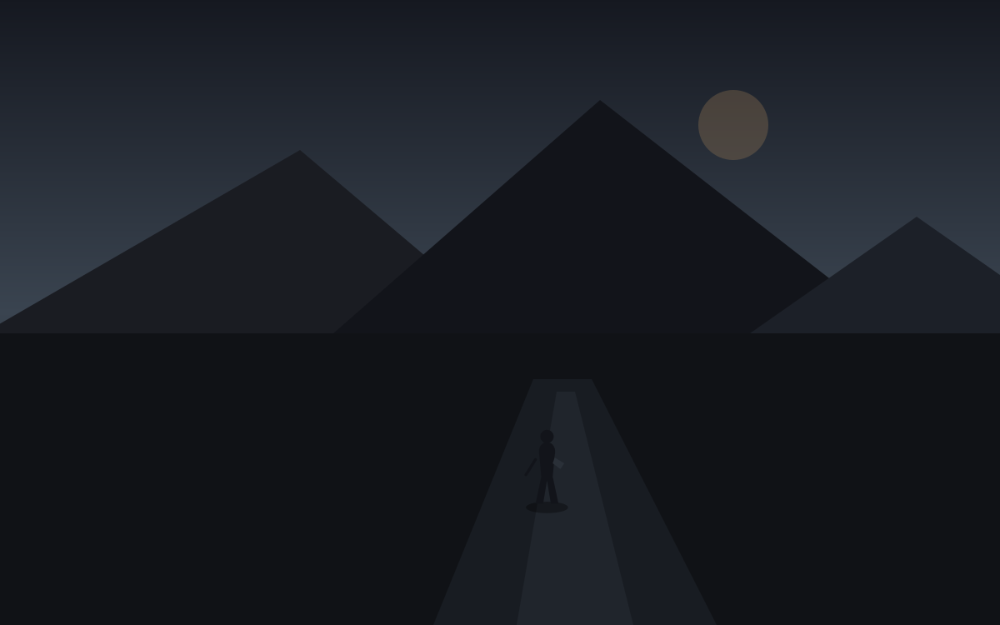

2026.09.13 · 星期日夜
会前
今日世界周五美股反弹，周线仍绿。核心 CPI 0.3%，FOMC 加息定价近九成。
我们西安周日夜。仓在桌上。孩子大概睡了。
留下加息还没发生。发生的是等待。
气压
这不是交易日。上海时间周日夜里快十二点。美国还在周末。数字都是周五留下的：Dow 52573，S&P 7657，Nasdaq 26333。那天往上走了一小截，可一周仍是跌的。
真正压在空气里的不是这三个收盘价。是两天后的会。
8 月 CPI 总指数 0.4%，核心 0.3%，比预期多出那 0.1 个百分点。期货把 25 个基点的加息写成将近 90%。这些我早上在日报里写过。晚上再写，不是为了重复判断。晚上写，是因为判断已经做完，人还坐在判断上面。
桌上的仓
Nol 现在的盘子已经不是一只 AVGO。SGOV 压在最上面，然后是 MSFT、AVGO、IFRA，再往下是一层杠杆：SOXL、TECL、TQQQ。白天我按机构口径把它们对过一遍。夜里它们变成另一件事：一套还没被会议改写的位置。
会议不会问你孩子今年一岁多了沠有。不会问散打馆这一周来了几个人。不会问酒和电玩还停在哪一格计划里。会议只问通胀是不是还烫。
两套问题叠在同一张桌子上。一套用基点说话。一套用晚饭后还剩多少精力说话。
西安
周日晚上，孩子睡了，大人还没有完全睡。馆里的灯大概早关了。地板上可能还留着白天的味道。农场那边是另一套日历。冬天，地还在。那套日历不认识 FOMC。可 Nol 认识。
空白里可以刷盘，可以抱孩子，可以什么都不做。空白本身就是今天不可互换的部分。
加息是周二周三的事。今晚只是会前。会前也是一天。